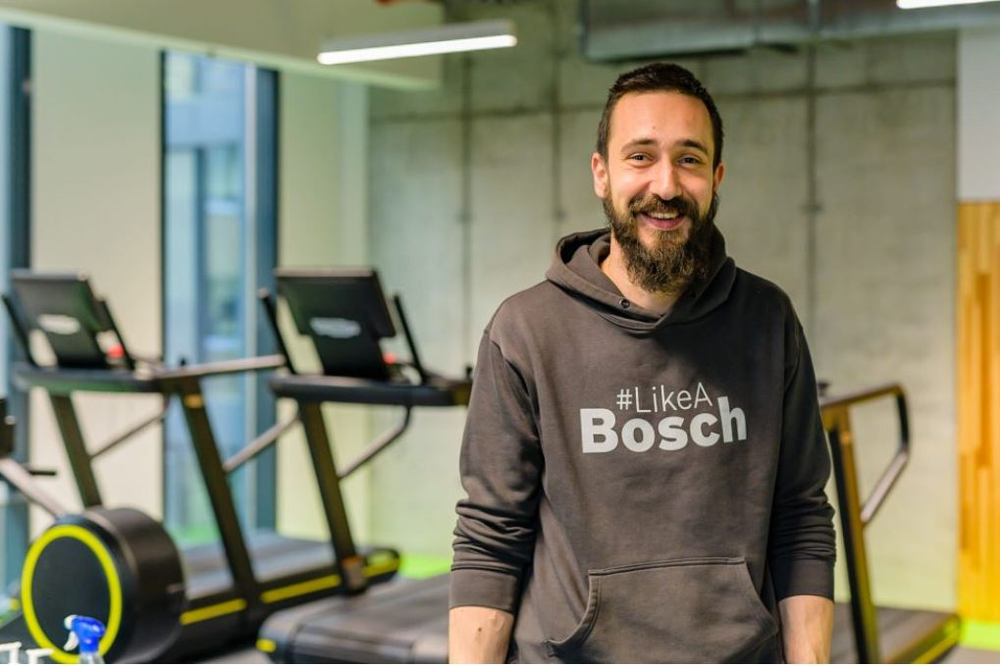
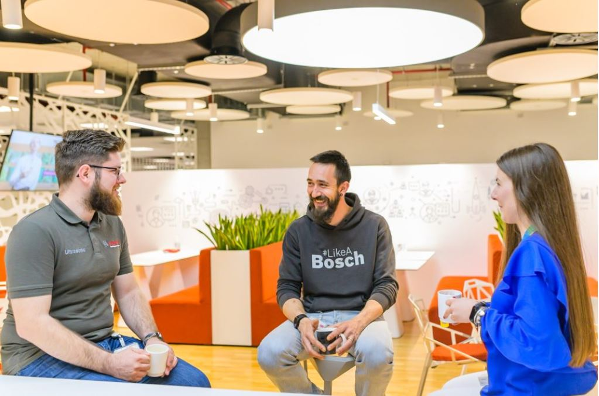
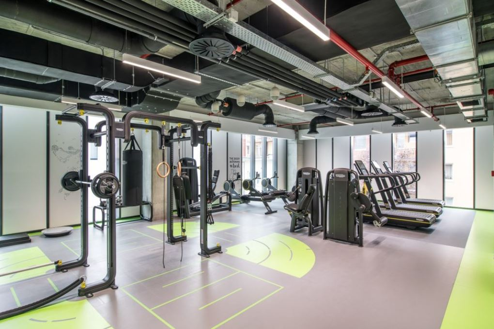
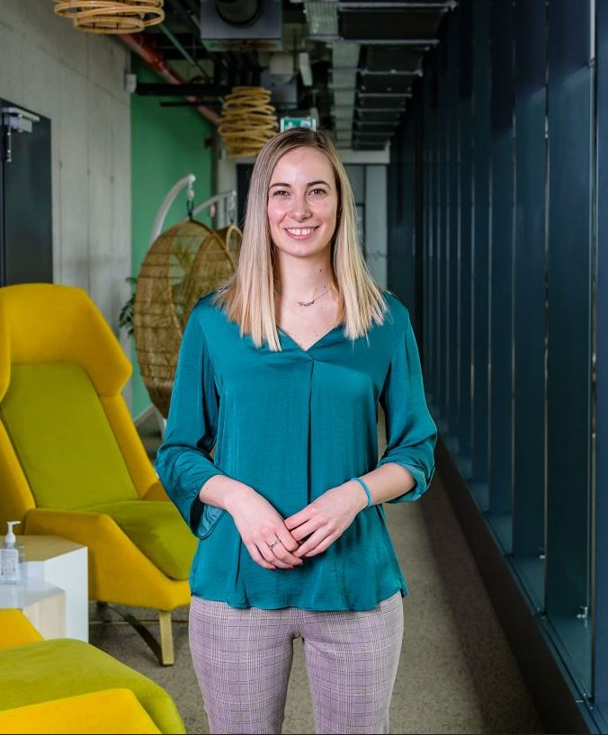
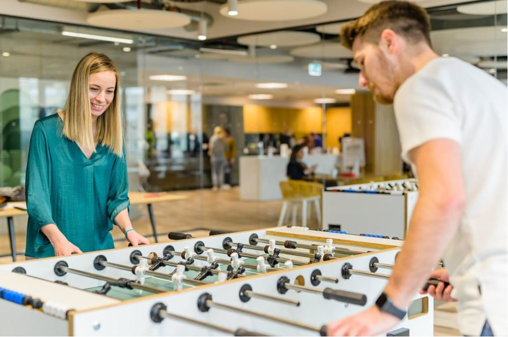

Angajaților companiei Bosch le place să spună că inima Bosch-ului sunt oamenii și tehnologia, iar câteva întâlniri și vizite în centrul acțiunii ne-au convins că așa și este. Dacă ar fi să amintim un avantaj pentru care chiar merită să aspiri la o poziție în această companie este acela de a ști că nu te vei simți niciodată singur. Fii doar curios și restul va veni de la sine.
Centrul de Inginerie a fost înființat în 2013 în Cluj ca parte integrantă a rețelei de inginerie globală Bosch, cu birouri în centrul orașului, dar și în incinta Fabricii Bosch Cluj din Jucu. Începând cu 2021, Centrul de Inginerie Bosch și-a extins activitatea și în București.
Am prospectat terenul la Cluj pentru a afla din surse sigure care sunt beneficiile pe care le oferă compania și ce presupune să ajungi să lucrezi într-un centru de inginerie de top. Vă invităm să cunoașteți Centrul de Inginerie prin povestea a patru angajați cu care ne-am întâlnit noi.
Pentru Vlad Scubli , aventura Bosch a început în 2014. Era proaspăt absolvent al unui Masterat în Sisteme Automate Avansate și împreună cu actuala lui soție s-au mutat la Cluj-Napoca. La acel moment, Bosch era în topul alegerilor lui Vlad pe baza studiilor lui și valorilor sale, așa că nu a refuzat oportunitatea de a se angaja, într-o primă etapă, în sectorul de producție, în domeniul calității. Înainte de a se alătura Centrului de Inginerie unde acum ocupă poziția de Group Leader, Vlad a avut rolul de Application Engineer precum și alte roluri în companie.
„Eram șapte oameni la început, dar echipa a crescut și e formată acum din două departamente cu peste 100 de oameni. Am fost Application Engineer inițial, apoi am avut și rol de Team Leader și cu timpul a fost creat un grup”, explică Vlad. În prezent, Vlad e responsabil de proiecte cu senzori cu ultrasunete pentru clienți externi, OEM, în domeniul ADAS (Advanced Driver Assistance Systems). Mai exact, echipa lui se ocupă de dezvoltarea sistemelor de asistență la parcare, fie că e clasică, semi autonomă sau autonomă, precum și de partea de funcții de viteză ridicată.
Parcursul lui Vlad în companie este exemplul cel mai concret al modului în care Bosch îți dă posibilitatea de a evolua în direcția pe care ți-o dorești, fie că urmărești o poziție de leadership sau cauți să te specializezi pe o anumită arie. Șansa de evoluție există tot timpul. În calitatea lui de Group Leader, Vlad are în responsabilitate o echipă pe care trebuie să o mențină în primul rând fericită. În al doilea rând, trebuie să se asigure că echipa va livra la timp, că lucrează corect, că toate competențele membrilor echipei corespund, să se asigure de partea lor de productivitate, de business plan, de salarii etc. În plus, chiar dacă are rol de lider, Vlad continuă să se implice și la nivel tehnic.
Un aspect foarte important al culturii Bosch ține de Astrategia companiei, a departamentelor și a grupurilor cu accent pe faptul că fiecare om în parte să înțeleagă unde se încadrează el în strategie pentru a avea o direcție.
La nivel de echipă, e foarte important când alegi un om. Competențe și studii toată lumea are, însă trebuie să ai și caracter. Complexitatea proiectelor ține oamenii motivați. Cu cât este un proiect mai complex, cu atât devine omul mai curios. Clienții noștri sunt producători de mașini și atunci interacțiunea directă cu ei, vizitele la ei sau pe site-urile lor de development unde se lucrează doar pe vehicule confidențiale, menține un nivel ridicat de curiozitate în echipă – precizează Vlad.
Proiectele pentru clienții OEM au diferite grade de complexitate, aflăm de la Vlad, iar “milestone-uri” dinamice de la acești clienți creează un mediu de lucru unde flexibilitatea este cheia. Clienții au centrele de dezvoltare în diferite locații ale lumii, fie că este vorba de Europa, Asia sau alte regiuni, locații care de cele mai multe ori trebuie vizitate. De asemenea, echipele din Cluj lucrează cu colegi din locații Bosch din toată lumea, fie că este pentru a se ajuta unul pe altul sau pentru a coopera pentru livrarea unui proiect de mare amploare.
Eu sunt foarte mulțumit de progresul meu în companie și pot spune că sunt un exemplu că da, se poate. Îmi dă un sens în ideea în care sunt bucuros când văd că oamenii din echipă reușesc, că echipa e felicitată. Iar când știu că și eu am contribuit să îi aduc la nivelul de competențe și la nivelul la care stăpânesc activitățile fără probleme, este cu atât mai satisfăcător – consideră Vlad.
Cele mai mari provocări pentru Vlad în rolul pe care îl are țin de schimbare. Iar schimbările pot interveni de azi pe mâine, în funcție de nevoile clientului.
Atunci este nevoie de un nivel de flexibilitate foarte ridicat atât din partea lui, cât și a echipei. În momente așa cruciale te poți trezi într-un taskforce, sau poți afla că ai de lucrat o cantitate de muncă într-un sfert din timp. Dar astfel de cazuri sunt destul de rare. Nu la fel putem spune de satisfacții, care vin la fiecare pas atunci când vezi un vehicul pe stradă care parchează singur știind că pentru a putea face asta mi-am adus și eu contribuția – precizează Vlad.
Să nu înțelegem că nivelul de presiune și stres nu poate fi destul de mare uneori. În aceste cazuri este important ca oamenii să înțeleagă impactul lor asupra proiectelor, să înțeleagă că de ceea ce fac ei depinde dacă o mașină intră sau nu în producție. Pentru Vlad e important ca în calitate de Group Leader să simtă pulsul echipei. Fiecare om poate să ducă un volum de muncă în funcție de experiență. De aceea e important ca într-un proiect să existe atât oameni cu multă experiență, cât și cei cu mai puțină experiență care încă învață. „Uneori chiar mă simt bine când avem proiecte mai solicitante, mă motivează. Poate sunt un consumator de stres, dar mă motivează. Transform stresul în energie pozitivă și mă alimentează”, precizează Vlad.
Flexibilitatea programului este la Bosch un alt avantaj pe care fiecare îl poate „exploata” liber. Poți să lucrezi de la birou, poți să lucrezi de acasă, sau de unde vrei din România, atâta timp cât ai o conexiune la internet și îți îndeplinești sarcinile. Libertatea de mișcare îți permite, de exemplu, ca vineri la ora 16:30 să îți închizi laptopul și să fii direct în mijlocul acțiunii, la țară cu familia, sau la munte cu prietenii fără a pierde ore bune în trafic pentru a ajunge la destinația din weekend.
Ziua lui Vlad începe cu o cafea bună împreună cu colegii lui. De cele mai multe ori cafeaua e urmată de o ședință de reporting sau de management alignment, iar alteori de o deplasare la Jucu pentru activitățile tehnice. Cea mai mare provocare pentru Vlad în companie a fost însă luna martie 2020 când a trebuit să lucreze de acasă din cauza pandemiei.
Pentru anumite persoane home office-ul e avantajos, dar mie îmi place să separ munca de viața personală. Mie nu îmi place să stau singur într-o cameră cu un laptop, îmi place să socializez cu oamenii, să îi văd – explică Vlad.
Orice variantă de lucru ai alege, ca angajat Bosch îți rămâne timp să îți dezvolți și pasiunile. În cazul lui Vlad, dronele, lumea automotive și home brewing-ul, sunt pe prim-plan. Lui Vlad i-au lipsit în pandemie întâlnirile periodice cu departamentul lui, ieșirile pe terasă la o pizza sau la bere. I-a lipsit și drumul la birou pe trotinetă sau pe bicicletă și toate beneficiile pe care Bosch le pune la dispoziție în noul sediu. Ca antrenor personal certificat, Vlad se bucură de foarte multe ori de sala de fitness de la etajul întâi. În plus, la Bosch ai sisteme prin care îți poți deconta transportul în comun, ai biciclete electrice pe care le poți folosi prin sistem de rezervare, ai asigurări medicale foarte avantajoase, consiliere în nutriție și un mediu extrem de prietenos în care îți poți descoperi skill-uri nebănuite.
Transparență și sinceritate, acestea sunt valorile cel mai des reiterate atunci Vlad și ceilalți colegi ai lui vorbesc despre compania Bosch.
Cine își dorește să lucreze la Bosch, să știe că vine într-un mediu în care poate să se dezvolte, în care nu va avea frica zilei de mâine, un mediu de lucru cu provocări în care poți să explorezi ce îți place. Avem producție și engineering. Poți vedea întreaga arie a engineering-ului și a producției la noi. Avem trei hale de producție în Jucu, un birou de engineering aici, un birou de engineering în Jucu și organizația continuă să se dezvolte.
În aceeași zi în care l-am cunoscut pe Vlad, am vrut să ne convingem că perspectiva lui nu e singulară. Am povestit și cu Patricia Coman, absolventă a Facultății de Automatică și Calculatoare la UTCN, cu o experiență deja de cinci ani în companie, care ne-a confirmat că mentalitatea și valorile Bosch sunt într-adevăr sănătoase. Cu cât a început să ne povestească mai multe despre parcursul ei, cu atât am fost mai curioși să aflăm toate detaliile.
Patricia a obținut la Bosch un prim job pe domeniul în care a studiat. Într-o primă etapă ea a intrat într-o echipă de Model Based Function Developer, care de la 3 persoane s-a extins astăzi la mai mult de 20. Trecerea de la proiecte studențești la cele din industrie a fost destul de abruptă.
Noi ne ocupăm de partea de siguranță funcțională a vehiculelor, dar cu particularitățile fiecărui client. Siguranța funcțională este un subiect de sine stătător și văzând tot mai mult interesul în ceea ce privește conducerea autonomă și automatizată, realizez că pot contribui prin munca mea la siguranța pasagerilor, pietonilor și vehiculelor – și asta îmi place cel mai mult – spune Patricia.
La început a fost… nimeni și nimic care să ne vorbească despre viața orașului, despre ce se întâmplă în materie de evenimente și localuri pe plan local, niciun motiv care să ne scoată din casă.
Everyday we’re clujlife(ing). Ieșim din casă, vedem ce se întâmplă, ce mai e nou, ce mai zice lumea, ce-ar mai fi interesant de făcut, și apoi îți povestim și ție. Facem asta din Ianuarie 2008. Prezența aceasta îndelungată ne-a adus destule cunoștințe și curaj încât să abordăm subiecte pe care nu le ”atinge” nimeni. Avem informații pe care nu le găsești în altă parte și acces la mulți oameni din varii domenii.